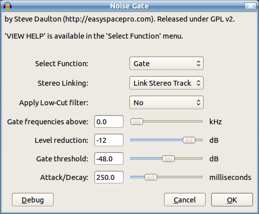

Alternative Noise Reduction Techniques
- Show Audacity a "noise profile" - a short section of audio containing only the noise to be reduced
- Return to the effect to apply the noise profile to all the audio.
Notch Filter
Suppose you've loaded your audio into Audacity and listened to it, only to be disappointed to find it's contaminated with a continuous, fairly pure tone of some kind. This is a case where you can get good results using the Notch Filter effect which you will find underneath the divider in the Effect menu.
Spectral Editing
Use the Spectral Editing tools to identify and eliminate continuous tones or transient noises.
Noise Gate
A Noise Gate is a type of "audio gate" that is "open" and allows sounds to pass unaltered when the level is above a "threshold" level. When the audio signal is below the threshold level, the gate "closes" and stops, or reduces the signal making it substantially quieter. A Noise Gate does not eliminate noise from a signal but reduces the noise level during the quiet periods between sounds. There are many situations where this can be useful.
- When there is very low level noise that is effectively masked by the recorded material, a Noise Gate can lower the noise level during silent parts of the recording where the low level noise would otherwise be apparent.
- When noise reduction by other methods causes unacceptable degradation of the sound quality, a Noise Gate can reduce the noise level to some extent between sounds without affecting the actual recorded sounds.
- Where there is low level intermittent noise of a similar type to the actual recorded sound (for example, if sound from a distant television or radio is audible during pauses in a speech recording) a Noise Gate can make the pauses more silent.
- A Noise Gate may be used after the Audacity Noise Reduction effect to further reduce the noise level during periods that should be silent.
Nyquist Noise Gate Plug-in
|  |
{kind=link}
The Nyquist Noise Gate plug-in has a number of features and settings that allow it to be both effective and unobtrusive. One of the most critical settings when using a Noise Gate is to set the Threshold carefully. This plug-in provides an analysis tool to assist with setting the threshold level correctly:
- Make a selection that is "noise only" and open the Noise Gate effect.
- and make a note of the suggested threshold level.
- Select a section of the audio track that includes both sound and silence.
- Apply the Noise Gate with the following settings: . Listen carefully to the result to check that the noise is being cut and the audio is still present. This effect will probably sound unnatural as the gate is fully closing and producing absolute silence when closed, but it will allow you to easily hear if the threshold level is set correctly. Click CTRL + Z to undo and if necessary adjust the threshold level and retest.
- When you are happy that the threshold level is correct, raise the "Level reduction" setting to the highest setting that produces an acceptable amount of gating (the default level of -12 dB usually works well).
- When you are happy with the settings, apply to the entire song.
| Advanced Tip: By default the Noise Gate will take 1/4 second or 250 milliseconds (ms) to fully open and fully close. In some cases it is desirable to make the gate open faster or more slowly. At the minimum (10 ms) the gate will fully open and close almost instantly as the audio level crosses the threshold. This could cause the gate to 'flutter' or 'snap'. At the maximum
(1000 ms) the gate will begin to slowly open (fade-in) 1 second before the sound level exceeds the Threshold, and will gradually close (fade-out) after the sound level drops below the Threshold for a period of 1 second. Longer gate times (up to 10 seconds) may be achieved by typing in the text box instead of using the slider. |